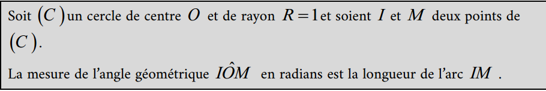
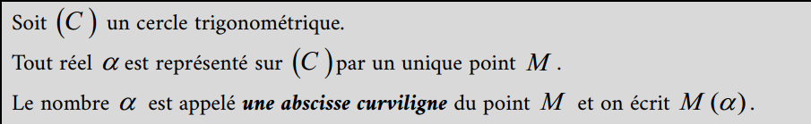
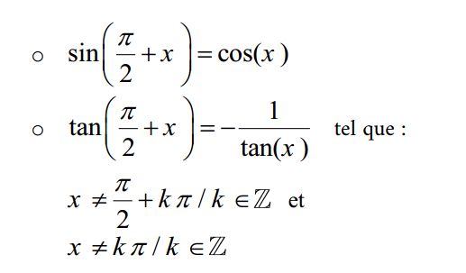
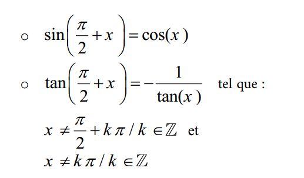

Cours Calcul trigonométrique
- Unité de mesure Radian
- Cercle trigonométrique
- Abscisse Curviligne
- Rapports trigonométrique d'un nombre réel
- Signe de cosinus - sinus et tangente d'un nombre réel
- Relations entre les rapports trigonométriques
- Rapports trigonométriques pour des angles usuels
- Equations et inéquations trigonométriques
1 - Unité de mesure Radian:

2 - Cercle trigonométrique:
3 - Abscisse Curviligne:
4 - Rapports trigonométrique d'un nombre réel:

5 - Signe de cosinus - sinus et tangente d'un nombre réel:
6 - Relations entre les rapports trigonométriques:
 
